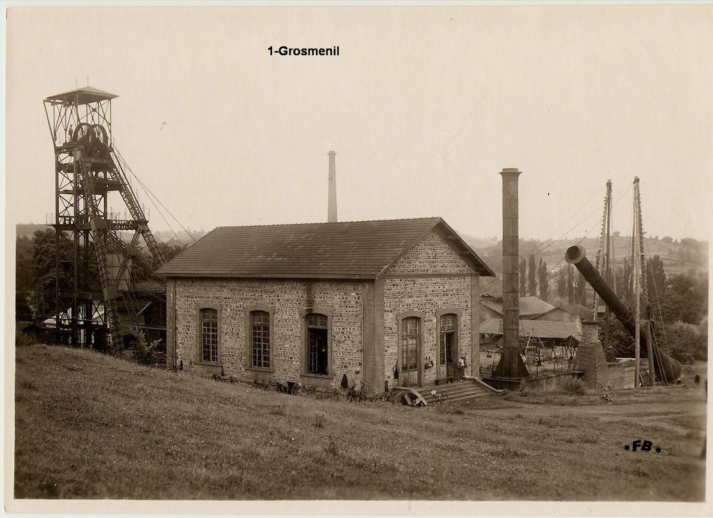

L'histoire du bassin minier : La catastrophe de Grosménil
La localisation
A cheval sur deux départements, le gisement de Brassac les mines est scindé en deux : La partie sud du gisement est située dans le département de la haute loire avec les concessions de Grosmenil, Auzon, Frugères, Fondary, et la Taupe. La partie nord située dans le département du puy de dôme avec les concessions de Brassac, Auzat, Charbonnier, Armois et Entremonts.
Voici la photo du puit de Grosmenil